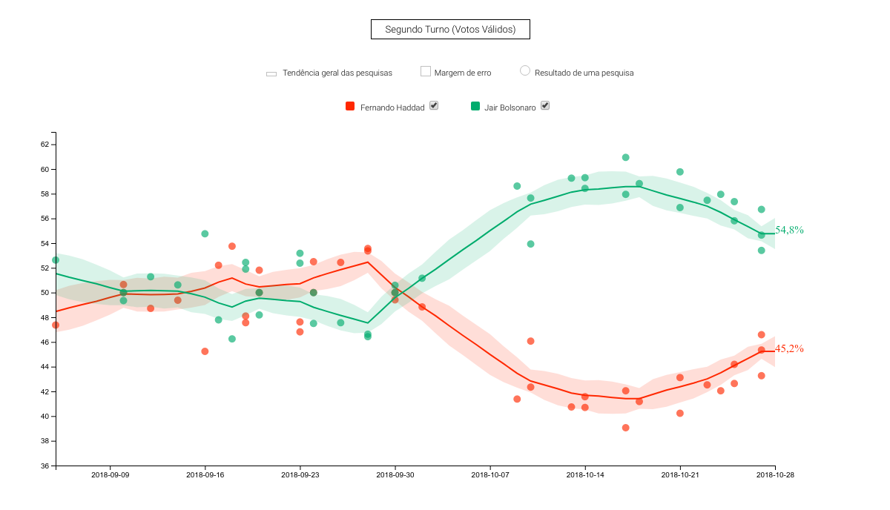
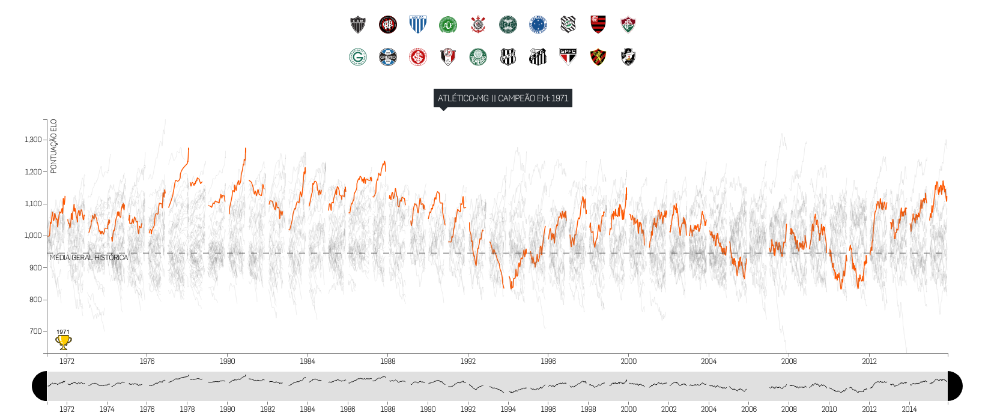

Brazilian 2018 Election Poll Aggregator
For the 2018 election year, I developed a poll aggregator app that predicted the results of the presidential election with a high rate of accuracy (data.jota.info/agregador), which helped the public better understand how vote intentions are translated in polls, particularly during this unusually polarized election year. I utilized a Bayesian model programmed in Stan in order to generate the estimates.See More
The Panama Papers
I was one of the reporters in the Panama Papers investigation. We analyzed 1.5 million leaked documents of more than 200,000 offshore companies. For this investigation, as a reporter, I shared with other journalists abroad the 2016 Data Journalism Awards and the 2017 Pulitzer Prize for Explanatory Reporting. Some of the articles (In Portuguese): 1, 2, 3
History of the Brazilian Soccer League
I analyzed the history of the Brazilian Soccer League, using data from game results since 1971. I calculated a time series of ELO index for the best teams. See more 